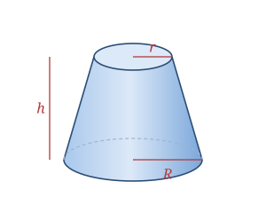

A cone frustum is what remains after you slice the pointed top off a cone with a cut parallel to its base. The result has two circular faces of different sizes — a larger bottom of radius R and a smaller top of radius r — joined by a curved (lateral) surface. Its slant height l is measured along that curved surface between the two circle edges.
Real-world frustums include buckets and flowerpots, lampshades, drinking cups, and the classic paper coffee cup.
Defined by the bottom radius R, top radius r, and height h; the slant height l follows.
| Surfaces | 2 flat circular faces + 1 curved side |
|---|---|
| Bottom radius | R |
| Top radius | r |
| Height | h |
| Slant height | l = √((R − r)² + h²) |
Slant height l = √((R − r)² + h²)
Volume V = (1⁄3)πh(R² + Rr + r²)
Lateral SA LSA = π(R + r)l
Total SA SA = π(R + r)l + πR² + πr²
Take a frustum with R = 4, r = 2, h = 6.
l = √((R − r)² + h²) = √(2² + 6²) = √40 ≈ 6.32
V = (1⁄3)πh(R² + Rr + r²) = (1⁄3)π(6)(16 + 8 + 4) = 56π ≈ 175.93
LSA = π(R + r)l = π(6)(√40) ≈ 119.22
Total SA = LSA + πR² + πr² ≈ 119.22 + 50.27 + 12.57 ≈ 182.05
Nearly every disposable drinking cup is a cone frustum — the slight taper lets the cups nest inside one another, so a whole sleeve of them takes up barely more space than a single cup.